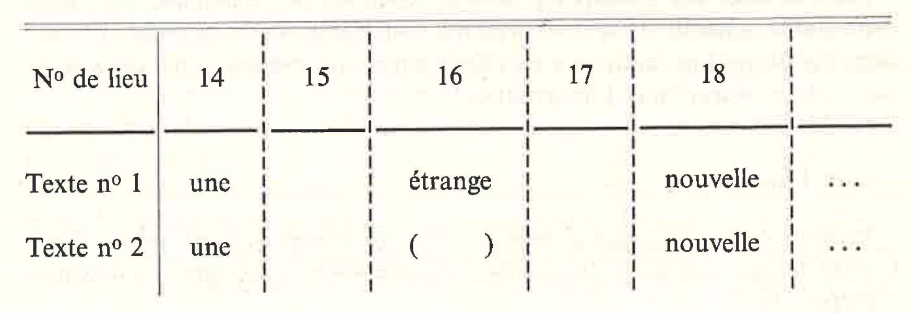

Le chantier
« Gustave Roud,
Œuvres complètes »
Cours Génétique textuelle (Daniel Maggetti)
Université de Lausanne, 20 octobre 2020
- Essai pour un paradis
- Exercices : transcrire et décrire
- Le journal
- Variantes génétiques
- Essai pour un paradis
- Éditions numériques
- Éditions numériques : technologies

« Œuvres complètes »
Projet FNS, 2017-2021
Direction : Claire Jaquier et Daniel Maggetti
Collaborateurs et collaboratrices : Alessio Christen, Bruno Pellegrino, Elena Spadini, Julien Burri, Raphaëlle Lacord
I. Essai pour un paradis
II. Exercices
Étrange intuition av[ant]-hier, tard dans la soirée. Provoquée par l’émotion inattendue, tout à fait inexplicable d’un souvenir devenu déchirant, tout à coup doué d’une résonance infinie : la chèvre de M[onsieur] S[eguin] qui s’est battue toute la nuit. Et puis à l’aube, le loup se jeta sur la petite chèvre et la mangea. Parmi mes larmes, je sens tout à coup, comme la plus vive des certitudes, le renversement d’après la mort qui transforme toutes les défaites des innocents en victoires. Certitude que rien, même lorsque je me retrouve dans un état d’esprit entièrement contraire, ne réussit à ébranler.
Quand Olivier hier soir m’a raconté, en y croyant, une nouvelle invraisemblable que la malice du maréchal avait forgée sur-le-champ, j’ai ressenti secrètement jusqu’au sang cette espèce d’affront et regardant ces beaux yeux clairs, bleus, rayonnants de leur pureté profonde levés vers moi, j’ai deviné, avec la même certitude, leur revanche future.
Étrange intuition avant-hier, tard dans la soirée. Provoquée par l’émotion inattendue, tout à fait inexplicable née d’un souvenir devenu déchirant, doué soudain d’une résonance infinie[.] Parmi mes larmes, je sens tout à coup, comme la plus vive des certitudes, ce renversement d’après la mort qui transforme toutes les défaites des innocents en victoires. Certitude que rien, même lorsque je me retrouve dans un état d’esprit entièrement contraire, ne réussit à ébranler.
Quand Olivier hier soir m’a raconté, sûr de la chose, une nouvelle invraisemblable que la malice d’un compagnon avait forgée, j’ai ressenti secrètement jusqu’au sang cette espèce d’affront et regardant ces beaux yeux clairs, bleus, rayonnants de leur pureté profonde levés vers moi, j’ai deviné avec la même certitude, leur revanche future.
- titre
- fonds
- cote
- ensemble éditorial
- type de document (manuscrit, dactylogramme, imprimé)
- avec annotations
- support (feuillet, agenda, carnet, cahier, bloc-notes, enveloppe)
- inscrument d'écriture
- couleur d'écriture
- date ou datation
- étape génétique (note, plan, liste, brouillon, mise au net, manuscrit définitif, épreuves corrigées, épreuves non corrigées, original corrigé)
- dossier génétique ou référence bibliographique
Instruments d'écriture et chronologie
▶ pas de plume bleue avant 1929
▶ stylo feutre utilisé dans les années 1966-67 (lancé sur le marché en '63)
Instruments d'écriture et projets
▶ stylo feutre pour Requiem (1967)
▶ stylo bille rouge pour Rome, peintres et écrivains (1954)
III. Le journal
À Olivier Cherpillod de Sarandin
Olivier, je te donne ces pages faites de minutes, hélas, puisqu’il n’y a pas une minute à perdre, toi par qui je sais enfin que nous sommes tout proches encore de notre innocence ; que sous un regard pur cette terre redevient peu à peu le ciel.
[…] Nous sommes saisis par cette vague, cette houle de juin – il y a ton épaule près de la mienne, et rendu au sable sec de juillet, je ne puis retrouver ni le désespoir, ni l’attente, ayant été comblé.
Trouver un enchaînement. Commencer par une grande « nuit » explication, et une somme de mon abandon, de mon désespoir, de mon attente, mais le difficile : établissement d’une chronologie : récit ? ou suite de poèmes ?
Question de facilité – et de délai ! trois semaines encore
[…] Doser l’absence, sinon l’habitude triomphera de tous mes élans. Hanté par telle image que j’aimerais composer et fixer, j’abandonne tous mes projets et l’aube nouvelle arrive en me serrant la gorge à la pensée subite des promesses à tenir et du délai chaque jour plus mince.
Au fond, ma solitude est extraordinaire.
Olivier « ressemblant », ou Aimé transfiguré ? Ce dilemme use en incertitude ma bonne volonté certaine.
Dernier soir de juin. Je redis ces mots avec solennité, en songeant au danger qu’il y aurait de vouloir toujours saisir minute par minute ce temps inouï (cette vieille erreur, combien de fois ne me la suis-je pas dénoncée !)[.] Maintenant que ce mois va se clore, peut-être le reverrai-je mieux – mais il faudrait ne pas être emporté par la houle temporelle, s’étendre sur quelque frise de sable intemporel, laisser en soi se recomposer un laps bien franc. Et déjà juillet commence.
... pause ...
IV. Variantes génétiques
Variations textuelles : types de modifications
Je ne commande pas mes sentiments ; parfois il me semble que mon corps les suscite. Parfois illuminations des sens ou de l’esprit, tout me semble venir d’un « ailleurs » souvent cité, jamais défini [tout me semble venir d’un éternel ailleurs]. D’où, depuis un mois peut-être, après le noir commencement de l’année [Depuis cette nuit que la main d’Aimé dans le soleil a vaincue], cette intérieure exultation qui ne laisse point de trêve, me tirant du sommeil avec un frémissement de tout l’être, et m’y laissant retomber la nuit avec le même bondissement. [!]
Après de longues années, des périodes d’éclat et d’éclipse, [début de phrase biffé] mon amitié jaillit enfin comme une fleur ; rien de plus lucide, de plus paisible et de plus aigu à la fois que cette profonde certitude où je trouve enfin mon repos. Je bois à cette source d’innocence. Qu’importent des lèvres souillées de leur ancienne souillure, tant de souvenirs chargés de poison. L’oubli n’est pas de toute nécessité le fait d’un lâche perpétuel.
Depuis des mois, [début de phrase biffé] les causeries, les calmes promenades. Le pays autour de nous jaune et sec sous un ciel épais et violâtre à l’horizon, puis retrouvant par degré sa transparence. […] Les toits rouges ou roses, les oiseaux consolés.
Aujourd’hui le dos au noyer de la colline, cerné [pris dans les lacs] d’une abeille infatigable j’attends son [ton] retour.
Chaque soir [jour] le champ de froment que le sentier traverse se hausse autour du corps passager [des corps passagers]. Ce soir les épis fleuris (un parfum violent) [parenthèse supprimée] atteignent mon épaule [nos épaules].
Mon feuillet [Le bras d’Aimé un instant immobile] est un combat d’ombres légères et de soleil, une danse de feuillages bleus, impalpables, sur un sable d’or.
V. Essai pour un paradis
Elle est pour moi – comme toute chose manquée – pleine d’enseignements ; mais qu’est-ce que ça peut faire au lecteur ?
VI. Éditions numériques
Éditions numériques (pas numérisées)
Catalogues
- Catalogue of Digital Scholarly Editions, compiled by Patrick Sahle
- Catalogue Digital Editions, compiled by Greta Franzini
Éditions numériques
Attention!
- RIDE: A review journal for digital editions and resources
- MLA Statement on the Scholarly Edition in the Digital Age
VII. Éditions numériques : technologies
- Encodage de texte : TEI
- Structurer l'information : bases de données
- Comparer les témoins : collation semi-automatique
- Reprise textuelle : text reuse
1. Encodage de texte
2. Bases de données


- XML
- relationnelles, tableaux (SQL)
- orientées graphe (NoSQL)
- etc.
3. Collation semi-automatique


Schmidt, D., 2009. "Merging Multi-Version Texts: a Generic Solution to the Overlap Problem". In Proceedings of Balisage: The Markup Conference 2009. Balisage Series on Markup Technologies, vol. 3 (2009).
Parmi les plus utilisés ...
4. Réemploi textuelle (text reuse)
Parmi les plus utilisés (DH) ...
Tracer et Essai pour un paradisImpresso Project (EPFL) utilise passim
Voir : Matteo Romanello, NLP and text reuse [youtube]; Text re-use detection in a nutshell [blogpost]